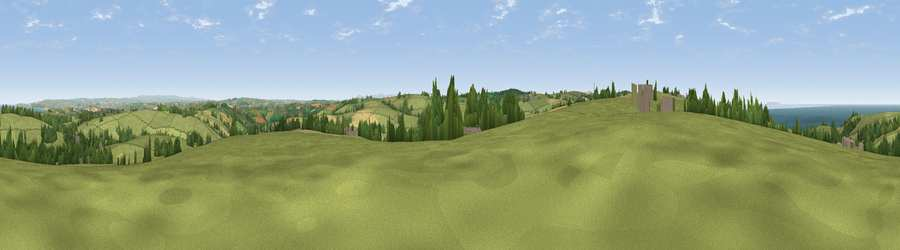

Viewpoint near Parkham
#5948 in England · top 16% of its area beats it · near ParkhamThe view, rendered

A 360° render of this exact spot computed from the terrain model, tree cover and land cover — summer colours, afternoon light, calibrated against photographs of famous viewpoints. Real trees, hedges and buildings will differ in detail.
The panorama
Grey silhouette: terrain skyline in each direction (720 bearings, Earth curvature and refraction included). Dashed green: skyline with trees (+15 m) and buildings (+8 m) as obstacles. Blue strip: how far the ground is visible on each bearing.
Where the view opens
Wedge length = distance to the farthest visible ground on that bearing (vegetation-aware). Rings at 10, 25 and 50 km.
What fills the view
70% grassland · 10% woodland · 9% cropland · 9% water ·
Angular shares of the visible panorama (visual magnitude), not map area. Landscape diversity 0.42 (0–1 Shannon).
Key numbers
More beautiful places nearby
The staircase of upgrades: each row has a higher view potential than everything closer. Driving times are estimates from straight-line distance, calibrated against real road routing — check an actual route before setting out.
| Place | Direction | Drive | Score |
|---|---|---|---|
| Babbacombe Hill | N · 1 km | ~4 min | 78.7 |
| Viewpoint near Parkham | W · 2 km | ~4 min | 81.7 |
| Viewpoint near Bucks Mills | W · 3 km | ~7 min | 84.0 |
| Viewpoint near Woolacombe | NNE · 19 km | ~33 min | 84.7 |
| Viewpoint near Combe Martin | NE · 30 km | ~48 min | 86.9 |
| Viewpoint near Combe Martin | NE · 31 km | ~48 min | 88.9 |
| Holdstone Hill | NE · 32 km | ~50 min | 90.2 |
| The Knoll | ESE · 119 km | ~143 min | 91.0 |
50.99044, -4.27937 · source: screening · position refined by local search. Computed location — check access rights before visiting.